type Binariser.m
type Compter_Monnaie.m
type Egalisation_Histogramme.m
type Filtre_Gaussien.m
type Filtre_Laplacien.m
type Rehaussement_Contour.m
function [ img_out ] = Binariser( img_in, threshold )
%Binariser Binariser
img_out = zeros(size(img_in));
for i = 1:size(img_in,1)
for j = 1:size(img_in,2)
if(img_in(i,j) < threshold)
img_out(i,j) = 0;
else
img_out(i,j) = 255;
end
end
end
end
function [ money_value, money_count ] = Compter_Monnaie( img_in )
%Compter_Monnaie Compter_Monnaie
line = strel('disk',5);
im2 = imerode(img_in,line,'same');
initial_count = max(max(bwlabel(im2))); %nb de pieces dans l'image
line = strel('disk',41);
im2 = imerode(im2,line,'same');
remaining_count = max(max(bwlabel(im2))); %nb de pieces restantes dans l'image
count_10c = initial_count - remaining_count;
current_count = remaining_count;
line = strel('disk',9);
im2 = imerode(im2,line,'same');
remaining_count = max(max(bwlabel(im2))); %nb de pieces restantes dans l'image
count_5c = current_count - remaining_count;
current_count = remaining_count;
line = strel('disk',5);
im2 = imerode(im2,line,'same');
remaining_count = max(max(bwlabel(im2))); %nb de pieces restantes dans l'image
count_25c = current_count - remaining_count;
current_count = remaining_count;
line = strel('disk',7);
im2 = imerode(im2,line,'same');
remaining_count = max(max(bwlabel(im2))); %nb de pieces restantes dans l'image
count_1d = current_count - remaining_count;
current_count = remaining_count;
line = strel('disk',7);
im2 = imerode(im2,line,'same');
remaining_count = max(max(bwlabel(im2))); %nb de pieces restantes dans l'image
count_2d = current_count - remaining_count;
money_value = (count_10c * 0.1) + (count_5c * 0.05) + (count_25c * 0.25) + (count_1d * 1) + (count_2d *2);
money_count = [count_5c count_10c count_25c count_1d count_2d];
end
function [ img_out ] = Egalisation_Histogramme( img_in )
%Egalisation_Histogramme Applique un filtre d'égalisation d'histogramme à
%une image
img_out = zeros(size(img_in));
f = imhist(img_in);
fn = f/sum(f); %Histogramme normalisé
for i = 1:size(img_in,1)
for j = 1:size(img_in,2)
img_out(i,j) = 255*T_transform(img_in(i,j),fn);
end
end
end
function [ value_out ] = T_transform(value_in, hist_n)
value_out = sum(hist_n(1:value_in+1));
end
function [ img_out ] = Filtre_Gaussien( img_in, mask )
%Filtre_Gaussien Filtre_Gaussien
img_out = conv2(double(img_in),double(mask),'same');
end
function [ img_out ] = Filtre_Laplacien( img_in )
%Filtre_Laplacien Filtre_Laplacien
mask_l = [-1 -1 -1;
-1 8 -1;
-1 -1 -1];
img_out = conv2(double(img_in),double(mask_l),'same');
end
function [ img_out ] = Rehaussement_Contour( img_in, mask_g, k )
%Rehaussement_Contour Rehaussement_Contour
mask_l = [-1 -1 -1;
-1 8 -1;
-1 -1 -1];
img_g = conv2(double(img_in),double(mask_g),'same');
img_out = img_g + k * conv2(double(img_g),double(mask_l),'same');
end
img = imread('img1.jpg');
figure(1)
img_eq = uint8(Egalisation_Histogramme(img));
imshow(img_eq);
title('Figure 1: Image égalisée')
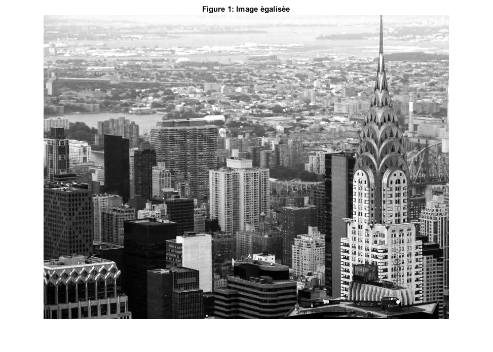
mask_gaussien = (1/90) * [1 2 1 2 1;
2 4 8 4 2;
1 8 18 8 1;
2 4 8 4 2;
1 2 1 2 1];
img_gauss = uint8(Filtre_Gaussien(img_eq,mask_gaussien));
figure(2)
imshow(img_gauss);
title('Figure 2: Image après filtre Gaussien')
img_lap = Filtre_Laplacien(img_gauss);
img_lap = img_lap - min(min(img_lap));
img_lap = uint8(255 * img_lap/max(max(img_lap)));
figure(3)
imshow(img_lap);
title('Figure 3: Image après filtre Laplacien')
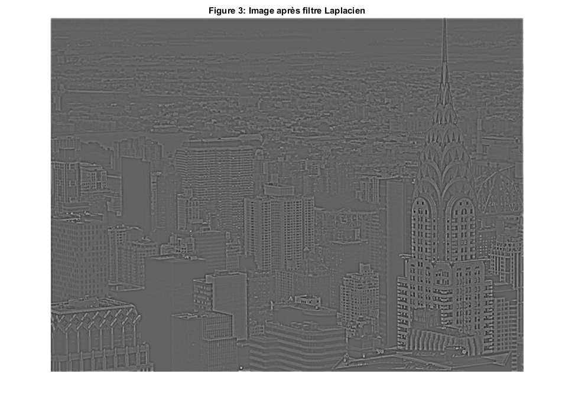
mask_g = (1/16) * [1 2 1;
2 4 2;
1 2 1];
img_cont = Rehaussement_Contour(img_gauss,mask_g,1.2);
img_cont = img_cont - min(min(img_cont));
img_cont = uint8(255 * img_cont/max(max(img_cont)));
figure(4)
imshow(img_cont);
title('Figure 4: Image après rehaussement de contour')
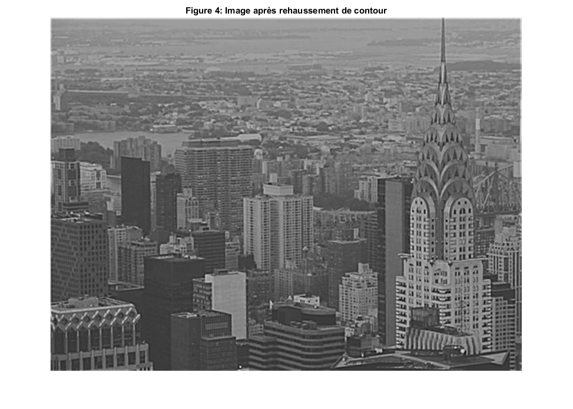
img = imread('monnaie.png');
figure(5)
imshow(img);
title('Figure 5: Image originale')
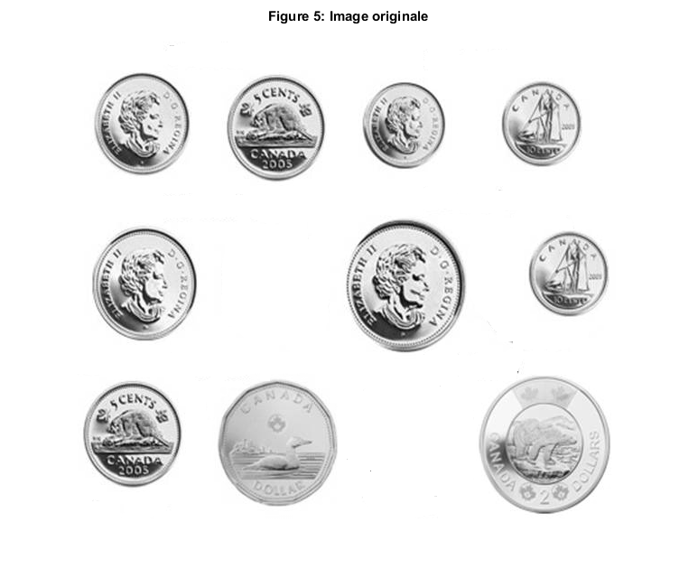
img_bw = Binariser(img,250);
img_bw_inv = 255 - img_bw;
figure(6)
imshow(img_bw_inv);
title('Figure 6: Image binarisée')
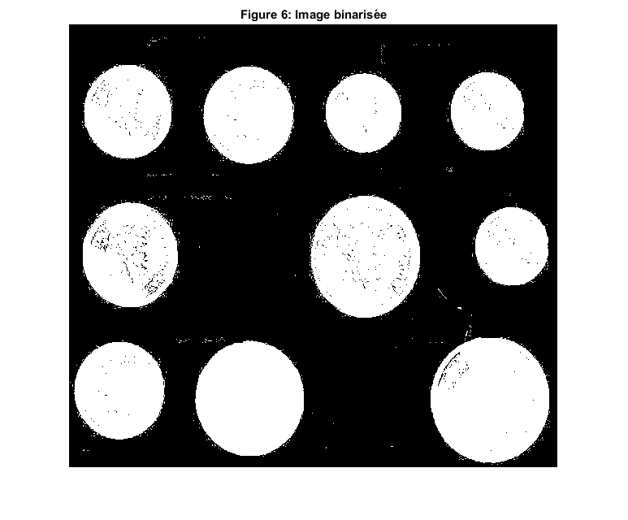
se = strel('disk',1);
img_close = imclose(img_bw_inv,se);
figure(7)
imshow(img_close);
title('Figure 7: Image après fermeture')
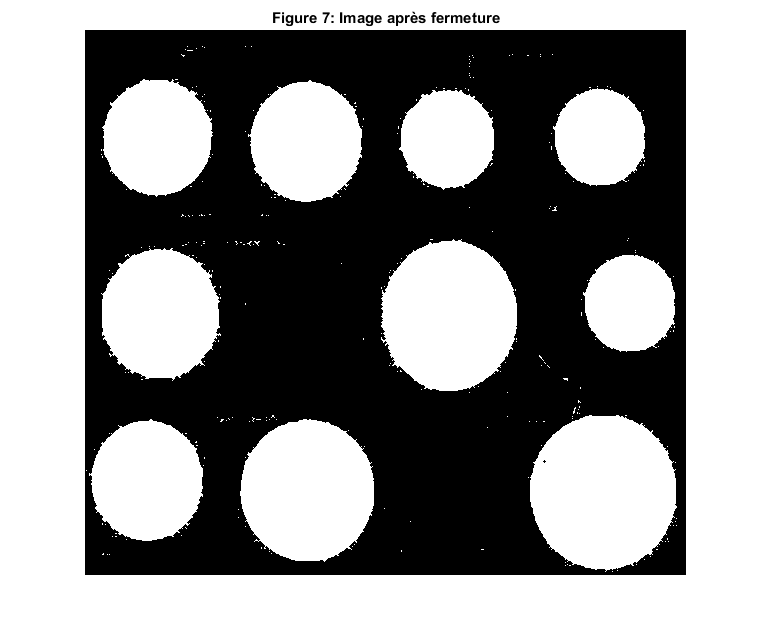
[value,count] = Compter_Monnaie(img_close);
disp('Valeur monétaire: ')
disp(value)
Valeur monétaire:
4.7000
img_h = imread('Barres_Horizontales.png');
img_v = imread('Barres_Verticales.png');
img_o = imread('Barres_Obliques.png');
figure(8)
subplot(221)
imshow(img_h)
title('Figure 8.1: Image originale (Barres Horizontales)')
subplot(222)
imshow(img_v)
title('Figure 8.2: Image originale (Barres Verticales)')
subplot(223)
imshow(img_o)
title('Figure 8.3: Image originale (Barres Obliques)')
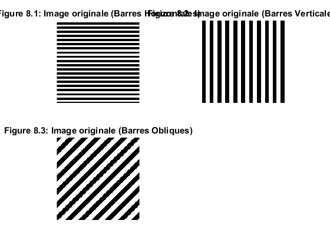
fft2_h = fft2(img_h,size(img_h,1),size(img_h,2));
fft2_h = abs(fft2_h/numel(fft2_h));
fft2shift_h = fftshift(fft2_h);
fft2shift_h = log(1 + fft2shift_h);
figure(9)
subplot(221)
imshow(fft2shift_h,[])
title('Figure 9.1: Spectre (Barres Horizontales)')
fft2_v = fft2(img_v,size(img_v,1),size(img_v,2));
fft2_v = abs(fft2_v/numel(fft2_v));
fft2shift_v = fftshift(fft2_v);
fft2shift_v = log(1 + fft2shift_v);
subplot(222)
imshow(fft2shift_v,[])
title('Figure 9.2: Spectre (Barres Verticales)')
fft2_o = fft2(img_o,size(img_o,1),size(img_o,2));
fft2_o = abs(fft2_o/numel(fft2_o));
fft2shift_o = fftshift(fft2_o);
fft2shift_o = log(1 + fft2shift_o);
subplot(223)
imshow(fft2shift_o,[])
title('Figure 9.3: Spectre (Barres Obliques)')
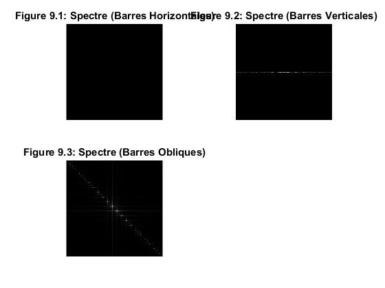
img_v_rotate = imrotate(img_v,70,'bilinear','crop');
figure(8)
subplot(224)
imshow(img_v_rotate)
title('Figure 8.4: Image Oblique Tournée')
fft2_v_rot = fft2(img_v_rotate,size(img_v_rotate,1),size(img_v_rotate,2));
fft2_v_rot = abs(fft2_v_rot/numel(fft2_v_rot));
fft2shift_v_r = fftshift(fft2_v_rot);
fft2shift_v_r = log(1 + fft2shift_v_r);
figure(9)
subplot(224)
imshow(fft2shift_v_r,[])
title('Figure 9.4: Spectre Oblique Tourné')
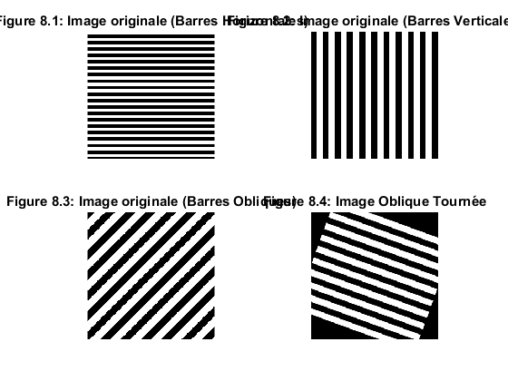 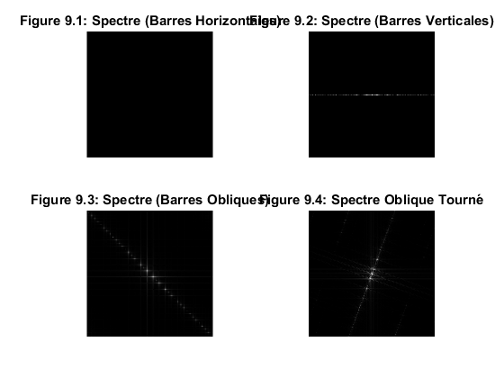
img_house = imread('NewHouse.png');
img_house_gray = rgb2gray(img_house);
figure(10)
subplot(121)
imshow(img_house_gray,[])
title('Figure 10.1: Image en nuances de gris')
fft2_house = fft2(img_house_gray);
fft2_house = fftshift(fft2_house/numel(fft2_house));
subplot(122)
imshow(abs(fft2_house))
title('Figure 10.2: Spectre de cette image')
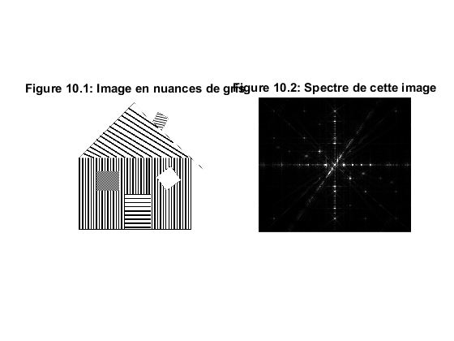
schema = imread('schema_colored.png');
figure(11)
imshow(schema)
title('Figure 11: Schema du spectre identifié')
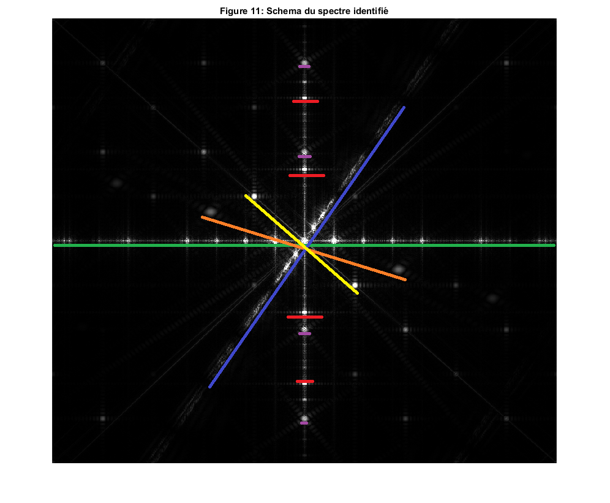
H = fspecial('gaussian', size(img_house_gray), 12);
filtre_toit = imfilter(img_house_gray,H);
figure(12)
imshow(filtre_toit)
title('Figure 12: Texture de toit révélée par filtre Gaussien')
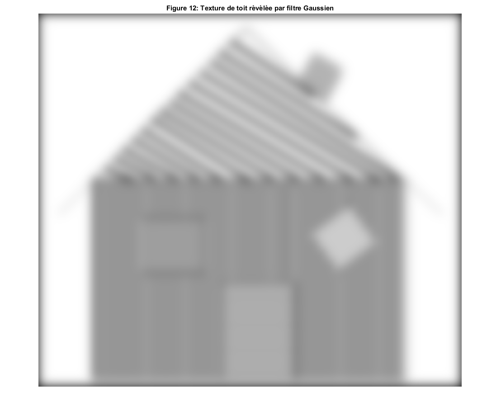
ideal_filter = double(rgb2gray(imread('ideal_filter.png')));
ideal_filter = ideal_filter/sum(sum(ideal_filter));
ideal_filter = imresize(ideal_filter,[825 936]);
filtre_windows = fft2_house .* ideal_filter;
filtered_img = ifftshift(filtre_windows);
filtered_img = ifft2(filtered_img);
filtered_img = Binariser(filtered_img,0.0000001);
figure(13)
imshow(abs(filtered_img),[])
title('Figure 13: Texture de fenêtre révélée par filtre idéal')
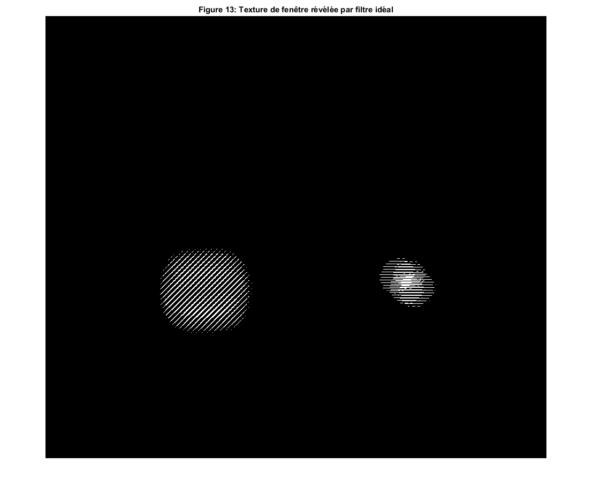
door_filter = double(rgb2gray(imread('filtre_door.png')));
door_filter = door_filter/sum(sum(door_filter));
door_filter = imresize(door_filter,[825 936]);
filtre_door = fft2_house .* door_filter;
filtered_img = ifftshift(filtre_door);
filtered_img = ifft2(filtered_img);
filtered_img = Binariser(filtered_img,0.0000001);
figure(14)
imshow(abs(filtered_img),[])
title('Figure 14: Texture de porte révélée par filtre idéal')
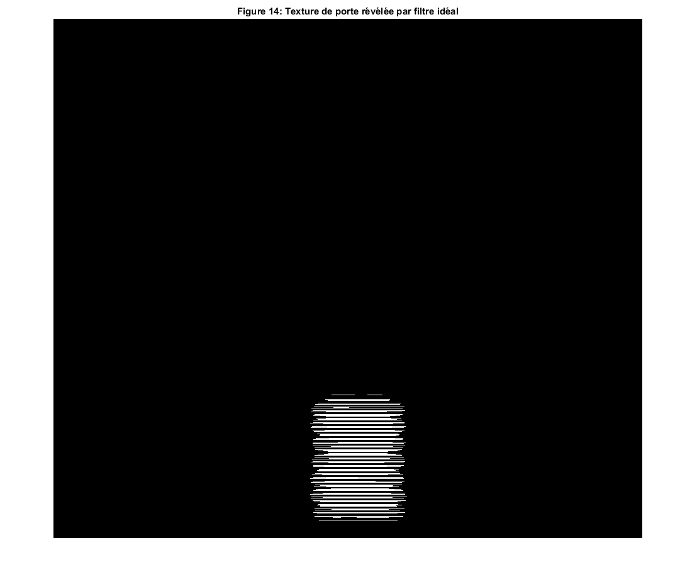